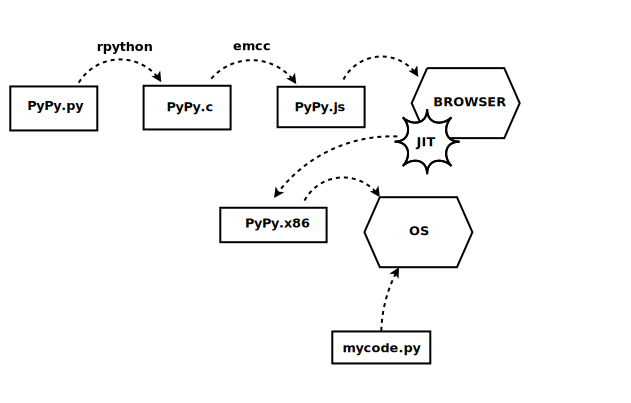

Cross-Compiling
Code for the Web
Ryan Kelly
ryan@rfk.id.au@rfkelly
Cross-Compiling
Code for the Web
Ryan Kelly
ryan@rfk.id.au@rfkelly
Mozilla
Mozilla
Mozilla
❤
The Web
The Web
|
Technology:
|
Culture:
|
The Web
|
Technology:
|
Culture:
|
Open?
demo
Open Cultere, Closed Technology?
|
Technology:
|
Culture:
|
Cross-Compile
to the Web?
The Past
In the Beginning
|
Java:
|
JavaScript:
|
Compiler Target
==
Serious Business
JavaScript: not good enough
|
|
None really stuck
They weren't "Of the Web"
|
Technology:
|
Culture:
|
Meanwhile...
JavaScript: not good enough?
|
Features:
|
Speed:
|
JavaScript: sometimes good enough!
|
|

The Present
demo
demo
demo
Emscripten:
- An LLVM backend that generates JavaScript
- A simulated POSIX environment (in JavaScript)
- SDL, OpenGL implementations (in JavaScript)
You still
have to "port"
demo: vim
demo: archive.org
demo: shootin' stuff
Surprising?
Surprising
that it's fast
asm.js
asm.js
"An extraordinarily optimizable, low-level subset of JavaScript"
Formalizing asm.js paid off:
- Deterministic ahead-of-time-compilation
- Other browsers can target it as input
- Other tools can target it as output
PyPy.js
PyPy.js =
PyPy + Emscripten
PyPy.js:

The Future
asm.js: almost good enough
- Inefficient text-based representation
- Restricted interaction with host environment
- Fixed-size memory heap
- No threads, no SIMD, ...
WebAssembly
WebAssembly
- An abstract semantics for the asm.js syntax tree
- An efficient binary encoding of that syntax tree
- An ambitious plan to take it into the future


In the End?
|
WebAssembly:
|
JavaScript:
|
In the End?
|
WebAssembly:
|
JavaScript:
| |||
| Common Foundation | ||||
Lessons?
- The Web resists big-design-up-front
- It evolves incrementally, for better or worse
Lessons?
- The Web resists big-design-up-front
- It evolves incrementally, for better or worse
- "Always bet on JS"
Lessons?
- The Web resists big-design-up-front
- It evolves incrementally, for better or worse
- "JS finds a way"
Thanks!
http://emscripten.org/
http://asmjs.org/
https://github.com/webassembly/
ryan@rfk.id.au
@rfkelly